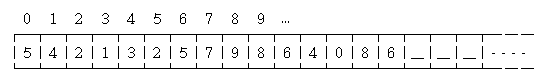
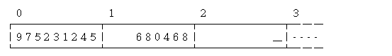

Number
Number
「數字」。例如1 2 3 4 5 3.1415。
Number資料結構
name example data structure -- ----------------------- ----------- --------------------- ℕ natural numbers 自然數 0 1 2 3 4 --- ℤ integers 整數 -2 -1 0 1 2 integer 整數 ℚ rational numbers 有理數 1/3 0.123 fraction 分數 ℝ real numbers 實數 π e floating-point 浮點數 ℂ complex numbers 複數 √-1 1+2i complex 複數
數學家將數字分類為：自然數ℕ、整數ℤ、有理數ℚ、實數ℝ、複數ℂ。
計算學家建立了對應的資料結構：整數integer、浮點數floating-point，又衍生：大數big number、分數fraction、複數complex。注意到，由於數值計算的緣故，這些資料結構並不符合數學家的定義！
前兩種資料結構暨演算法（加減乘除運算），已經製作成電路，放在中央處理器裡面。我們不必重新實作，直接在程式語言當中宣告變數、使用運算子、呼叫內建函式即可。
後三種資料結構也已經成為內建函式庫，我們也不必重新實作。不過偶有例外，例如C和C++就沒有big number和fraction。
Number Operation
operation (noun) operation (verb) result (noun)
--- ---------------------- -------------------- ------------------
+ addition 加法 add 加 sum 和
− subtraction 減法 substract 減 difference 差
× multiplication 乘法 multiply 乘 product 積
÷ division 除法 divide 除 quotient 商
mod modulo 模 --- 模 remainder 餘
^ exponentiation 乘方 exponentiate 乘方 power 冪
√‾ --- 開方 --- 開方 root 根
log --- 取對數 --- 取對數 logarithm 對數
∑ summation 連加 --- 連加 sum 總和
∏ product of 連乘 --- 連乘 product 連乘積
a sequence
! factorial 階乘 --- 階乘 product 連乘積
Number資料結構: Integer
整數（Integer）
C與C++語言當中，可以直接使用char、short、int、long long建立整數資料結構，再以unsigned調整數值範圍。
切記，數值範圍有固定的上下限。如果超過上下限，稱做「溢位overflow」。依照C程式語言規格書，整數溢位是未定義行為，可能導致當機。
此處不介紹轉型規則、位元運算、型態大小、cstddef。這些不是演算法，大家自己查程式語言規格書吧。
資料結構
大家習慣使用二的補數表示法：
http://en.wikipedia.org/wiki/Two's_complement
scan
字串變整數。我沒有研究。
整數變字串。我沒有研究。
+
−
×
https://en.wikipedia.org/wiki/Multiplication_algorithm
×（Divide and Conquer）
a×b，其本質是a複製出b份，通通加起來。
如果b是偶數，我們將原問題分成兩個小問題：b/2份相加、b/2份相加（一模一樣，不必重算），最後兩者答案相加即可。
如果b是奇數，則分成三個小問題：b/2份、b/2份、1份，最後三者答案相加即可。
×（Double-and-Add Algorithm）
把b視作二進位，拆開b的每一個位數，從b的低位數處理到b的高位數，分別計算每一個位數與a的乘積，並且累加起來。
位數增加時，十進位之下是變成十倍，二進位之下則是變成兩倍。隨著b的位數逐漸增加，a也必須逐漸翻倍。
÷
http://en.wikipedia.org/wiki/Division_algorithm
mod
^
C/C++沒有次方運算子。內建函式庫的pow()是浮點數版本而非整數版本。必須自己動手寫程式。
^（Divide and Conquer）
a的b次方。要解決這個問題，不外乎就是把a乘上b次，就能得到答案。然而更好的解決方案是Divide and Conquer。以7^13來說好了，我們嘗試將它分成這樣：
7^13 = 7^7 × 7^6 7^6 = 7^3 × 7^3 7^3 = 7^2 × 7^1
那麼我們只要知道7^1、7^2、7^3、7^6、7^7五個數字，就可以算出7^13。以這種計算方式，不需要乘13次就可以得到答案了。
要怎麼求出7^1、7^2、7^3、7^6、7^7五個數字呢？這不是跟原問題很類似嗎？這都是求a的b次方呀！這樣我們就可以寫一個遞迴程式解決問題了！
一般來說，我們習慣採用對半分。不能對半的，也儘量對半。像是7^6就分成7^3 × 7^3。7^13則分成相差不多的7^7 × 7^6，而7^7只要用7^6乘個7就出來了。這種分法下，計算出a^b的時間複雜度是O(logb)，以2為底的logb。
為什麼不三等分、四等分呢？當然也可以囉。不過，這些等分方法會讓乘的次數，比二等分來的要多。大家可以自行觀察。
順便介紹一個問題「Addition Chain Exponentiation」，找到最少的相乘次數，是NP-complete。不能成功對半分的時候，事情會變得很複雜。
UVa 374 1374 ICPC 3621
^（Multiply-and-Square Algorithm）
仿照乘法的Double-and-Add Algorithm。
∑
∏
數學家稱作三角數。英文俗稱summorial，中文俗稱階加。
階加已有許多經典公式，例如梯形公式：1+2+...+n = n(n-1)/2，例如正方形的L形分解：1+3+5+7+...+(2n-1) = n^2。
!
Number資料結構: Floating-point
浮點數（Floating-point）
C與C++語言當中，可以直接使用float、double、long double建立浮點數資料結構。切記，數值範圍有固定的上下限。
資料結構
已經有標準規格，請參考IEEE 754：
http://en.wikipedia.org/wiki/IEEE_floating_point
特殊數字
浮點數溢位，依照IEEE 754規格書，將產生特殊數字，而且特殊數字仍然可以用於運算！
INF：無限大。 例如：正數除以0、兩個超大的正數相加。 -INF：負無限大。例如：負數除以0、兩個超小的負數相加。 -0：負零。 例如：負數乘以0。 NaN：非數。 例如：無限大與零互除、負數開根號。
此處不介紹特殊數字的運算規則，請讀者自行上網查詢。
精確度
浮點數，位數有限。當位數過多，將剔除低位數。剔除的詳細過程，請大家自行研究規格書。
有些十進位小數，換成二進位之後，是循環小數。由於位數有限，剔除低位數，使得數值變動了。
加減乘除運算，將預先比較兩數的數量級誰大誰小。如果數量級太懸殊，那麼數量級較低者，將剔除低位數，才進行計算。詳細計算過程，請自行研究規格書。
總而言之，浮點數的運算，要特別當心精確度問題。
scan
字串變浮點數。我沒有研究。
http://www.zhihu.com/question/22498967
浮點數變字串，主要有兩個演算法：Dragon4、Grisu3。有興趣的讀者請自行研究。
直至今日，某些演算法仍會得到錯誤結果。比方說，數量級很大，印成十進位，將得到奇怪的數字。
編寫程式碼顯示浮點數，必須經過scan與print兩個步驟，失真可能發生在scan、或者print、或者兩者皆有。上例的失真應該是發生在print。
÷
http://en.wikipedia.org/wiki/Division_algorithm
http://casdc.ee.ncku.edu.tw/class/CA/CH16.pdf
√‾
http://en.wikipedia.org/wiki/Methods_of_computing_square_roots
http://stackoverflow.com/questions/17410382/
∑（Kahan Summation Algorithm）
http://en.wikipedia.org/wiki/Kahan_summation_algorithm
加總一連串大小差異很大的浮點數，盡量保持精確。
∑（Binary Splitting）
http://en.wikipedia.org/wiki/Binary_splitting
用來加速分數運算。
!（Stirling's Formula）
http://en.wikipedia.org/wiki/Stirling's_approximation
http://en.wikipedia.org/wiki/Gamma_function
UVa 1185
延伸閱讀：math.h
Number資料結構: Big Number
大數（Big Number）
很大的數字，大到無法以一個簡單的變數型態儲存這個值。
一般來說，int這個變數型態，記憶體大小為32 bit，可以儲存數值範圍為-2^31到2^31 - 1的整數，大約是1後面再接九個零；而long long這個變數型態是64 bit的，可以儲存數值範圍為-2^63到2^63 - 1的整數。另外還有unsigned這個關鍵字，它能讓原本的變數型態能夠存入更大一點的正整數。
雖然int、long long的數值大小已經夠用了，但是人的慾望是無止盡的，總是想讓電腦能夠處理更大的數字、算得更精準。於是大數的技術就這樣產生了。
資料結構
要讓電腦存放這麼大的數字，有個好方法就是使用陣列。
陣列有很多格子，一個格子存一個數字；只要宣告1000格大小的int陣列，就可以存1000位數了！至於一個int變數，充其量也不過十位數而已──陣列能存放的數值大小，和int相比之下，實在是多很多很多。
我們習慣將低位數放在索引值較小的位置，高位數放在索引值較大的位置。比如存放680468975231245：
每個人對陣列的思考模式不一樣，像這裡就是由左至右的，另外也有人覺得陣列是由右至左、由上至下、彎彎曲曲的、……。要怎麼思考都是可以的，一以貫之就好囉。
陣列右端劃上橫線的格子，通常我喜歡存0進去，這樣子做運算的時候會比較方便；如果將橫線的部分設成-1，在運算時會出現點麻煩，所以我不喜歡、也不建議這麼做。
scan
從字串中讀取大數可以這麼做。
簡單起見，假設大數絕對不是負數。領略要點之後，撰寫負數版本的程式碼，應該難不倒各位讀者。
在螢幕上印出大數可以這麼做。
如果這個大數有可能是零，就得加個幾行程式碼。
>
比較哪個數字大。
+
這裡提供大數加法的粗略程式碼，希望能一目瞭然。
大數的運算有個有趣的地方，就是運算時不用立即進位，可以後來再一口氣進位。這件事情值得細想。
UVa 10035
−
繼續提供大數減法的粗略程式碼。
×
大數乘法的粗略程式碼。我一定要強調它是粗略的。
至於大數乘以int是比較容易的。
在「多項式乘法」章節將介紹更快的方法。
UVa 338 10106
÷
大數除法可以直接使用長除法。也是粗略程式碼。
商數範圍是零到九，所以必須一一嘗試。可以利用高位數相除來估計商數的範圍，便不必一一嘗試。這裡不加說明。
至於大數除以int是比較容易的。
√‾
大數開平方根可利用直式開方法。
http://mypaper.pchome.com.tw/zerojudge/post/1324177221
UVa 10023 10606
改進資料結構
一個欄位只存一個數字有點浪費。
int的範圍約為十位數字，一個欄位其實能夠存入九個位數的。一個欄位可存九個位數，那麼1000格的陣列，便可從原來的1000位數，搖身一變成為9000位數；一個欄位可存九個位數，若要表示1000位數，只需要112格的陣列就可以了。這個新想法，相當的節省空間，運算次數也會隨之減少。
不過，如果一個欄位存了很多位數，會對運算造成什麼影響呢？
從最簡單的加法、乘法開始思考好了：
首先，進位會受影響。如果一個欄位存了兩位數字，那麼做進位時，要每到100才能進位。
第二，進位後會溢位（overflow）嗎？進位會讓隔壁的欄位增加一些數字。如果隔壁的欄位原本就有一個很大的數字，那麼它加上進位的數值之後，會不會產生溢位？
第三，乘法是將某兩個欄位相乘，加到另一個欄位上。兩個欄位相乘，如果他們各是8位數，相乘之後至少也有15位數，這遠超過int的上限了，怎麼可能存進一個int之中呢？
或許還會有很多的問題需要考慮。
雖然問題重重，但是也並不代表一個欄位還是只能存一個數字吧？一個欄位存個兩三位，應該不成問題吧？這些問題就留給大家思考，在此不加贅述。
UVa 288 10220 10814 10925 748
GMP與MPFR